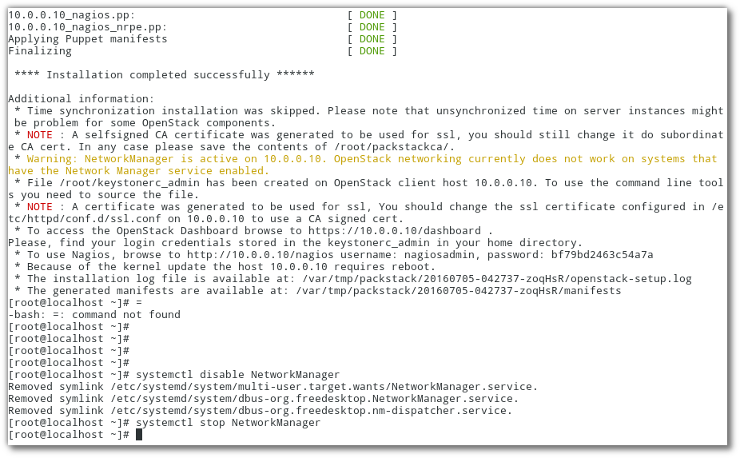

Openstack with Packstack¶
packstack¶
vagrant¶
สร้าง directory ชื่อ openstack และภายในมี Vagrantfile ดังนี้
# -*- mode: ruby -*-
# vi: set ft=ruby :
$script = <<SCRIPT
echo "run provisioning..."
echo 'root:password' | sudo chpasswd
sudo sed -i s/SELINUX=enforcing/SELINUX=disabled/g /etc/selinux/config
sudo systemctl disable NetworkManager firewalld
sudo systemctl enable network
HOST=$(cat << HOST
127.0.0.1 localhost localhost.localdomain localhost4 localhost4.localdomain4
::1 localhost localhost.localdomain localhost6 localhost6.localdomain6
10.0.0.10 controller.example.com controller
10.0.0.11 compute.example.com compute
HOST
)
sudo echo "$HOST" > /etc/hosts
sudo echo "nameserver 8.8.8.8" > /etc/resolv.conf
yum install -y epel-release
yum install -y centos-release-openstack-mitaka
yum update -y
#yum install -y openstack-packstack
SCRIPT
Vagrant.configure("2") do |config|
config.vm.box = "centos/7"
config.vm.define :controller do |node|
node.vm.network :private_network, :ip => "10.0.0.10"
node.vm.network :private_network, :ip => "20.0.0.10"
node.vm.hostname = "controller.example.com"
node.vm.provider :libvirt do |domain|
domain.uri = 'qemu+unix:///system'
domain.driver = 'kvm'
domain.memory = 8192
domain.cpus = 4
domain.nested = true
domain.volume_cache = 'none'
domain.storage :file, :size => '20G'
end
node.vm.provision "shell", inline: $script
end
config.vm.define :compute do |node|
node.vm.network :private_network, :ip => "10.0.0.11"
node.vm.network :private_network, :ip => "20.0.0.11"
node.vm.hostname = "compute.example.com"
node.vm.provider :libvirt do |domain|
domain.uri = 'qemu+unix:///system'
domain.driver = 'kvm'
domain.memory = 4096
domain.cpus = 2
domain.nested = true
domain.volume_cache = 'none'
end
node.vm.provision "shell", inline: $script
end
end
Download complete file Vagrantfile3
เข้าไปยัง controller
mkdir ~/packstack
cd packstack
wget https://thaiopen.github.io/sipacloudcourse/_downloads/Vagrantfile3
mv Vagrantfile3 Vagrantfile
vagrant up --no-parallel
vagrant ssh controller
#test ping to compute, selinux, network
ping compute
getenforce
systemctl is-active NetworkManager
systemctl is-active firewalld
Disk prepare for cinder¶
เตรียม disk ให้กับ cinder ด้วยการสร้าง volume group ชื่อว่า cinder-volumes
sudo su -
fdisk -l
...
Disk /dev/vdb: 21.5 GB, 21474836480 bytes, 41943040 sectors
Units = sectors of 1 * 512 = 512 bytes
Sector size (logical/physical): 512 bytes / 512 bytes
I/O size (minimum/optimal): 512 bytes / 512 bytes
...
##use /dev/vdb
pvcreate /dev/vdb
vgcreate cinder-volumes /dev/vdb
Install Packstack 2 way¶
การติดตั้ง Openstack ด้วย packstack เป็นการติดตั้งบน Redhat, CentOS7, Fedora โดยมีเบื้องหลังการ ติดตั้งโดยการใช้ puppet module สามารถติดตั้ง packstack ได้ 2 วิธี
Method2¶
ติดตั้งผ่าน source code (https://github.com/openstack/packstack):
sudo su -
yum install git -y
git clone git://github.com/openstack/packstack.git
##Follow activity
cd packstack
git log
git checkout -b mystack
#install python dependency
yum install python-pip python-devel -y
yum groupinstall "Development Tools" -y
yum install libffi-devel openssl-devel
#install
python setup.py install
...
Using /usr/lib/python2.7/site-packages
Finished processing dependencies for packstack===8.0.0.0rc1.dev114.gae579f6
หลังจากติดตั้ง packstack ทั้งสองวิธีแล้ว จะมี คำสั่ง packstack สำหรับการติดตั้ง openstack
โดยจะสร้าง answerfile มาแล้วทำการแก้ไข:
#go back to /root
cd ~
## generate answer file with
packstack --gen-answer-file "answer-$(date +%b-%d-%y).txt"
ls answer-*.txt
## packstack จะใช้ ip ของ eth0 เป็น ip ของ Management ip ของ openstack แต่เราจะใช้
## ip ของ eth1 แทน
## check ip in answerfile
grep HOSTS answer-Jul-21-16.txt
CONFIG_COMPUTE_HOSTS=192.168.121.9
CONFIG_NETWORK_HOSTS=192.168.121.9
## ดูค่า ip ของ eth0, eth1
ip -4 a show eth0 | awk '/inet/ {print $2;}'
192.168.121.9/24
ip -4 a show eth1 | awk '/inet/ {print $2;}'
10.0.0.10/24
## การแก้ไขด้วยการใช้คำสั่ง ``sed``
sed -i.orig s/192.168.121.9/10.0.0.10/g answer-Jul-21-16.txt
Edit Packstack Config¶
ไฟล์ answerfile นี้ สามารถแก้ไข และ run ซ้ำได้ แต่ห้าม generate ใหม่
## ตัวอย่างการใช้คำสั่ง grep เพื่อช่วยค้นหาคำ
grep -n ADMIN_PW answer-Jul-21-16.txt
333:CONFIG_KEYSTONE_ADMIN_PW=password
vim answer-Jul-21-16.txt +333
สรุป config เบื้องต้นสำหรับการปรับแต่ง:
CONFIG_KEYSTONE_ADMIN_PW=password
CONFIG_LBAAS_INSTALL=y
CONFIG_NEUTRON_METERING_AGENT_INSTALL=y
CONFIG_NEUTRON_FWAAS=y
CONFIG_NEUTRON_ML2_TYPE_DRIVERS=vlan
CONFIG_NEUTRON_ML2_TENANT_NETWORK_TYPES=vlan
CONFIG_NEUTRON_ML2_VLAN_RANGES=physnet2:1:1000
CONFIG_NEUTRON_OVS_BRIDGE_MAPPINGS=physnet2:br-eth2
CONFIG_NEUTRON_OVS_BRIDGE_IFACES=br-ex:eth0,br-eth2:eth2
CONFIG_HEAT_INSTALL=y
CONFIG_HEAT_CFN_INSTALL=y
CONFIG_TROVE_INSTALL=y
CONFIG_HORIZON_SSL=y
CONFIG_PROVISION_DEMO=n
การแก้ไขค่าจะใช้ crudini เป็นตัวช่วย:
yum install crudini rubygems -y
# name file may difference
answerfile=answer-Jul-21-16.txt
crudini --set $answerfile general CONFIG_KEYSTONE_ADMIN_PW password
crudini --set $answerfile general CONFIG_LBAAS_INSTALL y
crudini --set $answerfile general CONFIG_NEUTRON_METERING_AGENT_INSTALL y
crudini --set $answerfile general CONFIG_NEUTRON_FWAAS y
crudini --set $answerfile general CONFIG_NEUTRON_ML2_TYPE_DRIVERS vlan,vxlan,gre,flat,local
crudini --set $answerfile general CONFIG_NEUTRON_ML2_TENANT_NETWORK_TYPES local,vlan,gre,vxlan
crudini --set $answerfile general CONFIG_NEUTRON_ML2_VLAN_RANGES physnet2:1:1000
crudini --set $answerfile general CONFIG_NEUTRON_OVS_BRIDGE_MAPPINGS ext-net:br-ex,physnet2:br-eth2
crudini --set $answerfile general CONFIG_NEUTRON_OVS_BRIDGE_IFACES br-ex:eth0,br-eth2:eth2
crudini --set $answerfile general CONFIG_HEAT_INSTALL y
crudini --set $answerfile general CONFIG_TROVE_INSTALL y
crudini --set $answerfile general CONFIG_HEAT_CFN_INSTALL y
crudini --set $answerfile general CONFIG_HORIZON_SSL y
crudini --set $answerfile general CONFIG_PROVISION_DEMO n
crudini --set $answerfile general CONFIG_CINDER_VOLUMES_CREATE n
Install openstack puppet module¶
export GEM_HOME=/tmp/somedir
gem install r10k
...
Installing ri documentation for r10k-2.3.0
16 gems installed
## go to packstack source
cd ~/packstack
/tmp/somedir/bin/r10k puppetfile install -v
จะเป็นการติดตั้ง puppet module
INFO -> Updating module /usr/share/openstack-puppet/modules/aodh
INFO -> Updating module /usr/share/openstack-puppet/modules/ceilometer
INFO -> Updating module /usr/share/openstack-puppet/modules/cinder
INFO -> Updating module /usr/share/openstack-puppet/modules/glance
INFO -> Updating module /usr/share/openstack-puppet/modules/gnocchi
INFO -> Updating module /usr/share/openstack-puppet/modules/heat
INFO -> Updating module /usr/share/openstack-puppet/modules/horizon
INFO -> Updating module /usr/share/openstack-puppet/modules/ironic
INFO -> Updating module /usr/share/openstack-puppet/modules/keystone
INFO -> Updating module /usr/share/openstack-puppet/modules/manila
INFO -> Updating module /usr/share/openstack-puppet/modules/neutron
INFO -> Updating module /usr/share/openstack-puppet/modules/nova
INFO -> Updating module /usr/share/openstack-puppet/modules/openstack_extras
INFO -> Updating module /usr/share/openstack-puppet/modules/openstacklib
INFO -> Updating module /usr/share/openstack-puppet/modules/oslo
INFO -> Updating module /usr/share/openstack-puppet/modules/sahara
INFO -> Updating module /usr/share/openstack-puppet/modules/swift
INFO -> Updating module /usr/share/openstack-puppet/modules/tempest
INFO -> Updating module /usr/share/openstack-puppet/modules/trove
INFO -> Updating module /usr/share/openstack-puppet/modules/vswitch
INFO -> Updating module /usr/share/openstack-puppet/modules/apache
INFO -> Updating module /usr/share/openstack-puppet/modules/certmonger
INFO -> Updating module /usr/share/openstack-puppet/modules/concat
INFO -> Updating module /usr/share/openstack-puppet/modules/firewall
INFO -> Updating module /usr/share/openstack-puppet/modules/inifile
INFO -> Updating module /usr/share/openstack-puppet/modules/memcached
INFO -> Updating module /usr/share/openstack-puppet/modules/mongodb
INFO -> Updating module /usr/share/openstack-puppet/modules/mysql
INFO -> Updating module /usr/share/openstack-puppet/modules/nssdb
INFO -> Updating module /usr/share/openstack-puppet/modules/rabbitmq
INFO -> Updating module /usr/share/openstack-puppet/modules/redis
INFO -> Updating module /usr/share/openstack-puppet/modules/remote
INFO -> Updating module /usr/share/openstack-puppet/modules/rsync
INFO -> Updating module /usr/share/openstack-puppet/modules/ssh
INFO -> Updating module /usr/share/openstack-puppet/modules/stdlib
INFO -> Updating module /usr/share/openstack-puppet/modules/sysctl
INFO -> Updating module /usr/share/openstack-puppet/modules/vcsrepo
INFO -> Updating module /usr/share/openstack-puppet/modules/xinetd
copy module:
cp -r packstack/puppet/modules/packstack /usr/share/openstack-puppet/modules
Run
cd /etc/pki/tls/certs/
openssl req -x509 -sha256 -newkey rsa:2048 -keyout selfkey.key -out selfcert.crt -days 1024 -nodes
## answer question
Country Name (2 letter code) [XX]:TH
State or Province Name (full name) []:Bangkok
Locality Name (eg, city) [Default City]:Bangkok
Organization Name (eg, company) [Default Company Ltd]:MyOpenstack
Organizational Unit Name (eg, section) []:ITDepartment
Common Name (eg, your name or your server's hostname) []:controller.example.com
Email Address []:admin@example.com
Country Name (2 letter code) [XX]:TH
State or Province Name (full name) []:Bangkok
Locality Name (eg, city) [Default City]:Bangkok
Organization Name (eg, company) [Default Company Ltd]:MyOpenstack
Organizational Unit Name (eg, section) []:ITDepartment
Common Name (eg, your name or your server's hostname) []:controller.example.com
Email Address []:admin@example.com
## copy selfkey.key
mv selfkey.key /etc/pki/tls/private/selfkey.key
mkdir -p ~/packstackca/certs/
cd ~
packstack --answer-file answer-Jul-21-16.txt
## หากมี error แบบนี้
Preparing Nova VNC Proxy entries [ ERROR ]
ERROR : [Errno 2] No such file or directory: '~/packstackca/certs/10.0.0.10ssl_vnc.crt'
Fix error เนื่องจาก ssl_vnc.crt ที่สร้างขึ้นระหว่าง packstack จะไปสร้างใน directory /etc/pki/tls/certs/ ต้องย้ายมาเก็บไว้ใน ~/packstackca/ เนื่องจากได้กำหนดไว้ในค่าของ ตัวแปรที่ ชื่อว่า CONFIG_SSL_CERT_DIR
## Check config
grep -in packstackca answer-Jul-22-16.txt
249:CONFIG_SSL_CERT_DIR=~/packstackca/
## change config of CONFIG_SSL_CERT_DIR
crudini --set answer-Jul-22-16.txt general CONFIG_SSL_CERT_DIR /root/packstackca/
## copy
cp /etc/pki/tls/certs/ssl_vnc.crt ~/packstackca/certs/10.0.0.10ssl_vnc.crt
## run again
packstack --answer-file answer-Jul-21-16.txt
ผลการ Run
Neutron Network¶
Note
เนื่องจากเป็นการทดสอบบน vagrant จึงใช้ eth0 สำหรับการเชื่อมต่อ internet เท่านั้น และใช้ eth0 external network และ eth1 เป็น manament network ส่วน eth2 จะทำหน้าที่เป็น data-network
Openvswith จะทำหน้าที่สร้าง ระบบโครงสร้าง virtual network (ovs-system)ให้ ได้แก่ bridge ชื่อ ิbr-ex, br-int, br-tun และ เราจะต้องเชื่อมต่อ bridge นี้กับ interface จริง ดังรูป
Bridge physical interface and bridge¶
์Network Configuration ใน /etc/sysconfig/network-scripts/ จะแสดงการเชื่อมต่อระหว่าง
br-ex <–> eth0
cat ifcfg-br-ex
##
ONBOOT="yes"
PERSISTENT_DHCLIENT="yes"
DEVICE=br-ex
NAME=br-ex
DEVICETYPE=ovs
OVSBOOTPROTO="dhcp"
TYPE=OVSBridge
OVSDHCPINTERFACES=eth0
OVS_EXTRA="set bridge br-ex other-config:hwaddr=52:54:00:ee:fe:49"
cat ifcfg-eth0
##
DEVICE=eth0
NAME=eth0
DEVICETYPE=ovs
TYPE=OVSPort
OVS_BRIDGE=br-ex
ONBOOT=yes
BOOTPROTO=none
และ br-eth2 <–> eth2
cat ifcfg-br-eth2
##
NM_CONTROLLED=no
ONBOOT=yes
IPADDR=20.0.0.10
NETMASK=255.255.255.0
PEERDNS=no
DEVICE=br-eth2
NAME=br-eth2
DEVICETYPE=ovs
OVSBOOTPROTO=none
TYPE=OVSBridge
cat ifcfg-eth2
##
DEVICE=eth2
NAME=eth2
DEVICETYPE=ovs
TYPE=OVSPort
OVS_BRIDGE=br-eth2
ONBOOT=yes
BOOTPROTO=none
Openvswitch Interface¶
ตรวจสอบ interface ด้วยคำสั่ง ip link จะสังเกตุเห็น interface ที่ 5,7,9,11,11 เป็น ของ
openvswitch:
ip link
##
1: lo: <LOOPBACK,UP,LOWER_UP> mtu 65536 qdisc noqueue state UNKNOWN mode DEFAULT
link/loopback 00:00:00:00:00:00 brd 00:00:00:00:00:00
2: eth0: <BROADCAST,MULTICAST,UP,LOWER_UP> mtu 1500 qdisc pfifo_fast master ovs-system state UP mode DEFAULT qlen 1000
link/ether 52:54:00:ee:fe:49 brd ff:ff:ff:ff:ff:ff
3: eth1: <BROADCAST,MULTICAST,UP,LOWER_UP> mtu 1500 qdisc pfifo_fast state UP mode DEFAULT qlen 1000
link/ether 52:54:00:7c:45:f8 brd ff:ff:ff:ff:ff:ff
4: eth2: <BROADCAST,MULTICAST,UP,LOWER_UP> mtu 1500 qdisc pfifo_fast master ovs-system state UP mode DEFAULT qlen 1000
link/ether 52:54:00:58:81:34 brd ff:ff:ff:ff:ff:ff
5: ovs-system: <BROADCAST,MULTICAST> mtu 1500 qdisc noop state DOWN mode DEFAULT
link/ether fa:c8:7d:8b:61:be brd ff:ff:ff:ff:ff:ff
7: br-ex: <BROADCAST,MULTICAST,UP,LOWER_UP> mtu 1500 qdisc noqueue state UNKNOWN mode DEFAULT
link/ether 52:54:00:ee:fe:49 brd ff:ff:ff:ff:ff:ff
9: br-eth2: <BROADCAST,MULTICAST,UP,LOWER_UP> mtu 1500 qdisc noqueue state UNKNOWN mode DEFAULT
link/ether 3a:95:42:99:3c:4d brd ff:ff:ff:ff:ff:ff
10: br-int: <BROADCAST,MULTICAST> mtu 1500 qdisc noop state DOWN mode DEFAULT
link/ether f2:75:a8:13:61:41 brd ff:ff:ff:ff:ff:ff
11: br-tun: <BROADCAST,MULTICAST> mtu 1500 qdisc noop state DOWN mode DEFAULT
link/ether 8e:3e:d4:03:64:4e brd ff:ff:ff:ff:ff:ff
ตรวจสอบด้วยคำสั่ง ovs-vsctl show:
ovs-vsctl show
##
43a1c7ac-2a16-43c2-88d3-423334b04eea
Bridge br-tun
fail_mode: secure
Port patch-int
Interface patch-int
type: patch
options: {peer=patch-tun}
Port br-tun
Interface br-tun
type: internal
Bridge br-ex
Port br-ex
Interface br-ex
type: internal
Port "eth0"
Interface "eth0"
Port phy-br-ex
Interface phy-br-ex
type: patch
options: {peer=int-br-ex}
Bridge br-int
fail_mode: secure
Port patch-tun
Interface patch-tun
type: patch
options: {peer=patch-int}
Port int-br-ex
Interface int-br-ex
type: patch
options: {peer=phy-br-ex}
Port br-int
Interface br-int
type: internal
Port "int-br-eth2"
Interface "int-br-eth2"
type: patch
options: {peer="phy-br-eth2"}
Bridge "br-eth2"
Port "phy-br-eth2"
Interface "phy-br-eth2"
type: patch
options: {peer="int-br-eth2"}
Port "eth2"
Interface "eth2"
Port "br-eth2"
Interface "br-eth2"
type: internal
ovs_version: "2.5.0"
Task 1 upload image to openstack¶
Glance Service จะทำหน้าที่รับผิดชอบสำหรับการ upload image โดย default จะเก็บไว้ใน file system ``/var/lib
- Log in ด้วย keystonerc_admin
- Download image cirros image และ centos 7
- ชุดคำสั่ง glance และ ชุดคำสั่งใหม่คือ openstack
Cli Glance¶
เป็นคำสั่งเดิมที่มา แต่ version นี้ก็ยังสามารถใช้งานได้ แต่แนะนำให้เรียนรู้คำสั่งใหม่ไปควบคู่กัน (packstack จะสร้าง ไฟล์ keystonerc_admin ใช้สำหรับการ login ทาง commandline)
cd ~
source keystonerc_admin
## prompt change ##
(keystone_admin)#
## download
curl -O http://download.cirros-cloud.net/0.3.4/cirros-0.3.4-x86_64-disk.img
glance image-create --name='cirros image' --visibility=public --container-format=bare --disk-format=qcow2 --file cirros-0.3.4-x86_64-disk.img
+------------------+--------------------------------------+
| Property | Value |
+------------------+--------------------------------------+
| checksum | ee1eca47dc88f4879d8a229cc70a07c6 |
| container_format | bare |
| created_at | 2016-07-22T14:56:49Z |
| disk_format | qcow2 |
| id | 73c8577f-767c-497f-88fd-3e77ead3bae9 |
| min_disk | 0 |
| min_ram | 0 |
| name | cirros image |
| owner | cb1d456312e240a4af43dabe7c9927c9 |
| protected | False |
| size | 13287936 |
| status | active |
| tags | [] |
| updated_at | 2016-07-22T14:56:49Z |
| virtual_size | None |
| visibility | public |
+------------------+--------------------------------------+
ทดสอบอีกครั้งแต่คราวนี้ download centos7 image และใช้คำสั่ง ต่อเนื่องกัน ระหว่าง curl | glance:
curl http://cloud.centos.org/centos/7/images/CentOS-7-x86_64-GenericCloud-1606.qcow2 | glance image-create --name='centos7 image' --visibility=public --container-format=bare --disk-format=qcow2
+------------------+--------------------------------------+
| Property | Value |
+------------------+--------------------------------------+
| checksum | 5dbbe9649d1d9a208ce34a7a70a69320 |
| container_format | bare |
| created_at | 2016-07-22T15:11:46Z |
| disk_format | qcow2 |
| id | af2419ce-f869-4684-9940-eb619ac4e99b |
| min_disk | 0 |
| min_ram | 0 |
| name | centos7 image |
| owner | cb1d456312e240a4af43dabe7c9927c9 |
| protected | False |
| size | 915275776 |
| status | active |
| tags | [] |
| updated_at | 2016-07-22T16:25:30Z |
| virtual_size | None |
| visibility | public |
+------------------+--------------------------------------+
Cli Openstack¶
คำสั่ง openstack image ใช้สำหรับการบริหารจัดการ glance server ใช้แทนชุดคำสั่ง ``glance``เดิม
ที่มีใช้มาก่อน
openstack image
openstack: 'image' is not an openstack command. See 'openstack --help'.
Did you mean one of these?
image add project
image create
image delete
image list
image remove project
image save
image set
image show
usage list
usage show
Example of Openstack image¶
openstack image list
+--------------------------------------+---------------+--------+
| ID | Name | Status |
+--------------------------------------+---------------+--------+
| af2419ce-f869-4684-9940-eb619ac4e99b | centos7 image | active |
| 73c8577f-767c-497f-88fd-3e77ead3bae9 | cirros image | active |
+--------------------------------------+---------------+--------+
Adding Compute node¶
compute มี ip 10.0.0.11 ดังนั้นให้เพิ่ม ip ของ compute ไปยัง ค่า CONFIG_COMPUTE_HOSTS
พร้อมกับต้องเพิ่ม ip 10.0.0.10 ใน EXCLUDE_SERVERS
ssh-copy-id root@10.0.0.11
crudini --set answer-Jul-22-16.txt general CONFIG_COMPUTE_HOSTS 10.0.0.10,10.0.0.11
crudini --set answer-Jul-22-16.txt general EXCLUDE_SERVERS 10.0.0.10
crudini --set answer-Jul-22-16.txt general CONFIG_NOVA_COMPUTE_PRIVIF eth2
crudini --set answer-Jul-22-16.txt general CONFIG_NOVA_NETWORK_PRIVIF eth2
packstack --answer-file answer-Jul-22-16.txt
sudo systemctl enable openvswitch mariadb rabbitmq-server